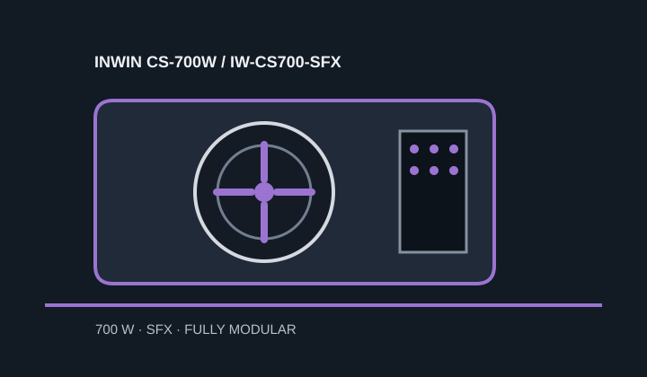

[ POWER CONVERSION // IDENTIFIED MODEL ]
InWin CS-700W (IW-CS700-SFX)
Exact model CS-700W, manufacturer part number IW-CS700-SFX, rated 700 W. Check the complete code against the product label.

HIGH-VOLTAGE SAFETY: Never open or probe a PSU; hazardous voltage can remain after unplugging.
Verified model specifications
| Model / rated output | InWin CS-700W / IW-CS700-SFX; 700 W total output. |
|---|---|
| Form factor / dimensions | SFX; 100 × 125 × 63 mm (length × width × height). |
| DC output rails | +12 V: 58.4 A / 700 W; +3.3 V: 22 A; +5 V: 22 A; −12 V: 0.3 A; +5 VSB: 2.5 A. The cited manufacturer materials do not establish a combined +3.3 V/+5 V maximum; no combined value is inferred. |
| Efficiency claim | 80 PLUS Gold, as identified in InWin's manual. |
| Cable-end connector counts | Fully modular: motherboard 20+4-pin ×1; CPU 4+4-pin ×2; PCIe 6+2-pin ×4; SATA ×8; Molex ×4; floppy ×1. Counts refer to cable ends. |
| Revision and cable cautions | Match CS-700W / IW-CS700-SFX and the included regional cable kit. PSU-side modular pinouts are model-specific and are not interchangeable merely because plugs fit. |
Compatibility & safe installation
- Check standard SFX mounting, case depth, ventilation and cable bends; the SFX label alone does not guarantee clearance in every compact chassis.
- Confirm peak system demand against 700 W total and the single +12 V rail; the manufacturer table gives no combined low-voltage rail ceiling in the cited material.
- Use only the supplied leads or replacements approved for IW-CS700-SFX. Do not mix modular cables between PSU models.
- Never open, repair or electrically probe the PSU.
Manufacturer sources
- InWin CS-700W support pageManufacturer model identification and documentation landing page.
- InWin CS-700W user manualManufacturer electrical table, dimensions, included connectors and installation information.